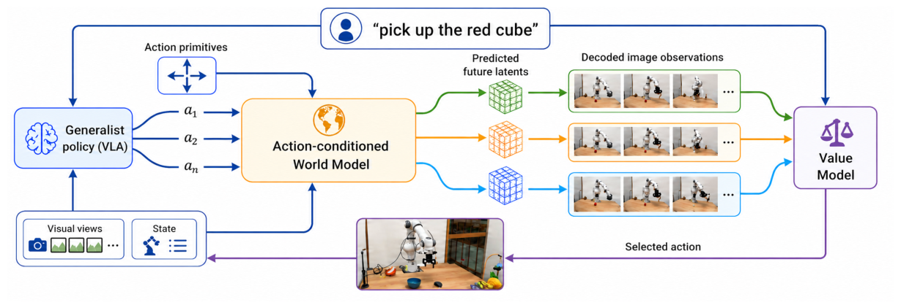
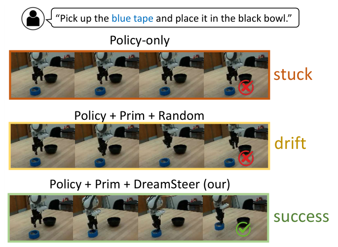

DreamSteer 深度调研笔记
速览
| 项 | 内容 |
|---|---|
| 一句话 | 冻结 VLA 采样多候选动作块（外加预定义运动原语），潜变量世界模型"想象"每个候选的未来，语言条件价值模型排序，只执行最高分——真机 OOD 成功率 23.75%→66.25%，指令遵循 38.75%→56.25% |
| 冻结 | VLA（π₀）、DINOv2 视觉编码器、世界模型、价值模型——全部组件冻结；不使用目标环境演示做任何适应 |
| 演化 | 无参数更新（纯推理时 steering） |
| 定位 | harness 谱系里的"世界模型预演排序"支线：harness 不是代码/技能，而是想象力 |

① 动机
- 预训练 VLA 零样本泛化有潜力，但部署时分布偏移下常失败。既有解法是拿目标环境数据微调——假设你能采到目标域演示，而这恰是部署场景最缺的。
- LLM 生态的启示：采样多个响应 + 裁判模型挑最好的。VLA 是生成式（随机）策略，第一次尝试失败时，其分布里往往存在正确动作——挑战是怎么把它认出来。
- 押注：让机器人在物理执行前"先想几条未来"——动作条件潜变量世界模型预演候选后果，价值模型按语言指令排序。
② 架构（部署时 steering 管线）

观测 o_t + 指令 ℓ ──▶ 冻结 VLA 采样 K_VLA 个候选 chunk
└─ ⊕ 预定义 Cartesian 运动原语 C_prim（"前进2cm""闭合夹爪"…）
候选集 C_t = C_VLA ∪ C_prim
──▶ 动作条件潜变量世界模型 W_φ：逐候选在 DINOv2 潜空间自回归预测未来
──▶ 解码未来观测 ──▶ 语言条件价值模型按 ℓ 排序 ──▶ 执行最高分 chunk
| 组件 | 设计 |
|---|---|
| 候选生成 | 冻结 VLA 采样 + 硬编码笛卡尔原语补盲（新环境里"向左微调 1cm"这类基本运动 VLA 也可能失手） |
| 世界模型 | 多本体训练（DROID 等异构数据：单臂/双臂/灵巧手/人类演示）；共享时空 Transformer + 本体专属 action/state tokenizer；缺失模态 token 级 masking |
| 潜空间动力学 | 在冻结 DINOv2 潜空间预测未来；解码为图像供价值模型评估 |
| 时空分解注意力 | 帧内空间 cross-attention + patch 级因果时间 cross-attention → 复杂度对 rollout 长度 H 近线性 |
| 价值模型 | 语言条件；轨迹分 = 沿 rollout 逐对相邻观测的进度估计求和 |
③ 机制：为什么"潜空间"是关键
- 工程可行性：同 RTX 4090、H=10、3 帧 320×192 解码——视频扩散 23.12s vs 潜变量 WM 0.59s（~39×）。多候选想象只有在潜空间才能进部署环。
- 价值一致性：不要求校准奖励，只要求潜空间 rollout 保持相对价值趋势（真值轨迹与想象轨迹的价值排序一致）。
- 功能交互预测：想象中拨动开关 → 世界模型预测场景光照变化（因果层面而非像素层面）。
④ 数据与基准
- 训练：异构交互数据集（DROID 等），跨单臂/双臂/灵巧手/人类；不含目标环境数据。
- 评测：四组真机 OOD 操纵基准（未见物体；Phone/Mustard/Tape/Eraser + 两个 OOD 场景）+ 指令跟随（IF）场景：
- 任务成功率 23.75% → 66.25%（基于 π₀ VLA）
- 指令遵循准确率 38.75% → 56.25%
④A 主结果对比（论文 Table 2，tex 已验）
真机 OOD 四物体（Phone/Mustard/Tape/Eraser，各 20 trials，成功率 %）：
| 配置 | 平均成功率 | 95% CI |
|---|---|---|
| π0（原生） | 23.75 | [15.8, 34.1] |
| π0 + DreamSteer | 42.50 | [32.3, 53.4] |
| π0 + primitives + random（随机选） | 0.00 | [0.0, 4.6] |
| primitives + DreamSteer（无 π0） | 0.00 | [0.0, 4.6] |
| π0 + primitives + DreamSteer | 66.25 | [55.4, 75.7] |
指令遵循准确率 38.75% → 56.25%。
④B 核心消融（消融内嵌于主表 + Table 1 特性对比）
- 随机替代价值排序 = 0%：动作候选池相同时，把"世界模型想象+价值排序"换成随机选择，成功率从 66.25% 崩到 0——增益全部来自排序质量，不是候选池变大；
- 去掉 π0 只留 primitives+steering = 0%：VLA 本体的动作分布在足量 primitives 下仍不可替代；
- 对比同类 steering 方法（V-GPS/FOREWARN/GPC/VLA-Reasoner/LaDi-WM）：均需 task-finetuned 评估器或不可零样本组合，DreamSteer 是唯一同时满足 zero-shot steering / training-free / 可组合的。
⑤ 与同类方法对照（论文 Table 1 摘要）
| 方法 | 多候选 chunk | 广义 WM | 零样本 steering | 训练无关组合 |
|---|---|---|---|---|
| V-GPS | ✗ | — | ✓ | ✗ |
| FOREWARN / GPC | ✓ | 任务微调（latent/pixel） | ✗ | ✗ |
| DreamSteer | ✓ | 广义 latent WM | ✓ | ✓ |
⑥ 局限与诚实边界
- 是有限候选集上的 rerank，不是全局最优规划——候选池里没有的动作永远不会被选中；
- 价值模型想象轨迹的评估依赖潜空间保真度，长 horizon 误差会累积；
- 部署环内每步要做 K 次想象 + 排序，有推理时延成本（论文以潜空间效率对冲）。
⑦ 簇内定位
- 与 Harness VLA / RoboDawn：同属"冻结底座 + 系统层补强"，但 DreamSteer 的 harness 是世界模型+价值模型（想象力），不是代码/技能/记忆；
- 与 Zetta：Zetta 的 critic 在执行中毫秒级纠错，DreamSteer 在执行前用想象排序；
- 与 EmbodiedSWE / HarnessPAI 的数据反哺：DreamSteer 完全不动训练侧——三者构成"改训练 / 改组织 / 改想象"三种冻结-增强路线；
- 是时间线里"test-time scaling 的 VLA 类比"代表：采样 + rerank，代价从算力换成想象力。